Kingdom Studio
Plataforma SaaS que genera, revisa, aprueba, programa y publica contenido editorial con IA, con panel de control y analíticas. FastAPI, Next.js, Supabase.
Ver proyectoSelección de proyectos web que incluyen landing pages, tiendas online, aplicaciones interactivas y sitios corporativos con tecnologías modernas.
Volver a servicios
Plataforma SaaS que genera, revisa, aprueba, programa y publica contenido editorial con IA, con panel de control y analíticas. FastAPI, Next.js, Supabase.
Ver proyecto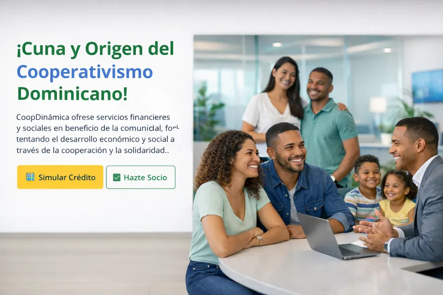
Sitio web moderno para cooperativa financiera con React, glassmorphism, dark mode y animaciones con Framer Motion.
Ver proyecto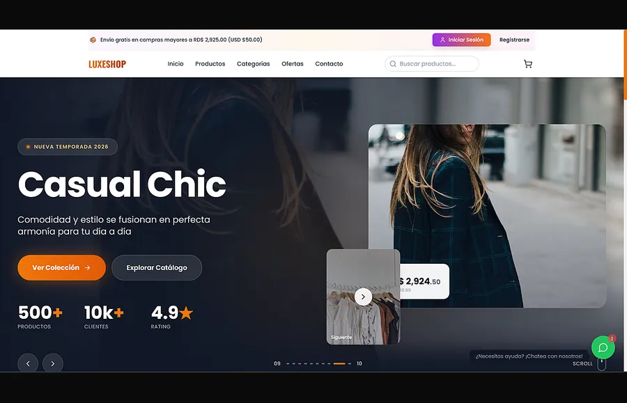
Tienda e-commerce moderna con catálogo, carrito de compras y experiencia de usuario optimizada. React, Node.js, MongoDB.
Ver proyecto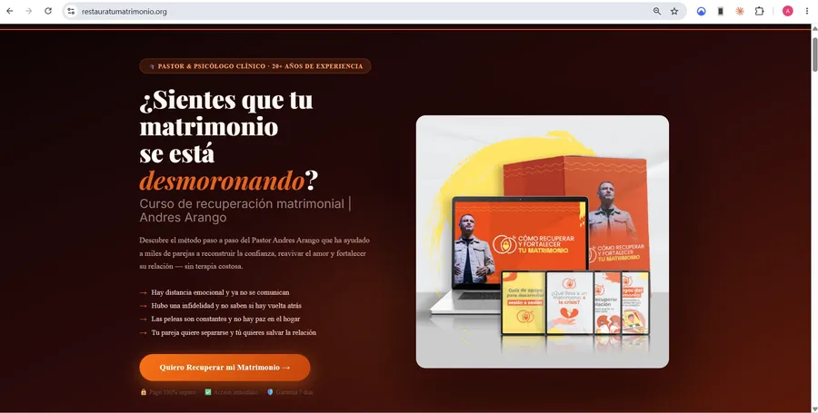
Landing page para curso de recuperación matrimonial, enfocada en conversión, confianza y captación de leads.
Ver proyecto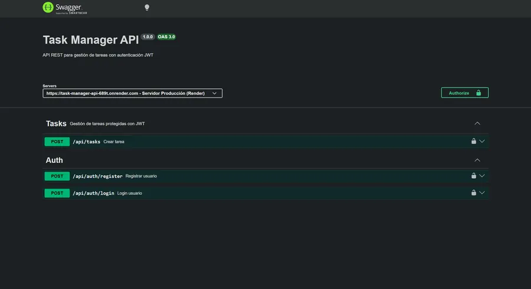
API REST para gestión de tareas con autenticación JWT, roles de usuario y estructura escalable. Node.js, Express.
Ver proyectoBlog interactivo sobre tendencias en IA, desarrollado con React + Vite + Tailwind, optimizado para SEO.
Ver proyecto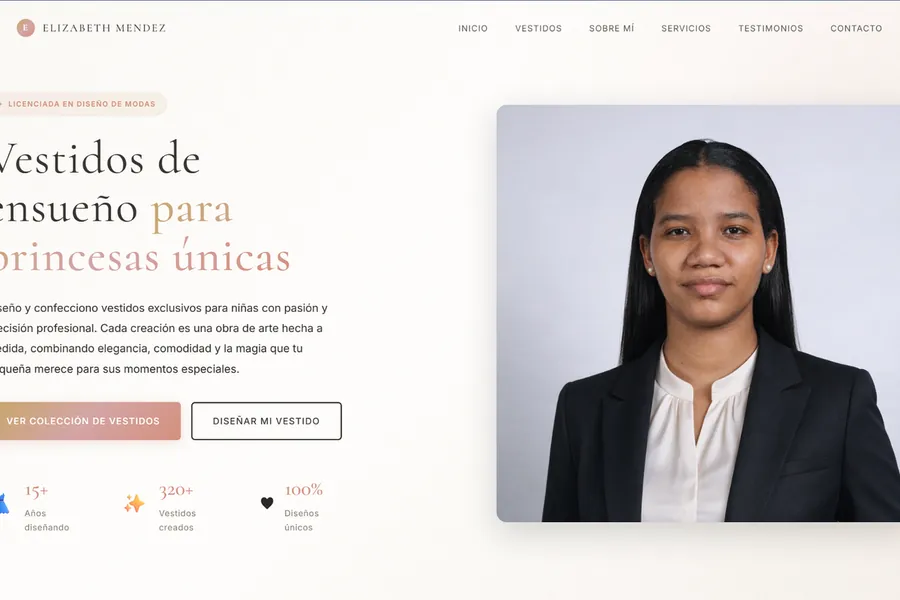
Portafolio para diseñadora de moda con catálogo interactivo y calculadora de presupuesto dual-currency.
Ver proyecto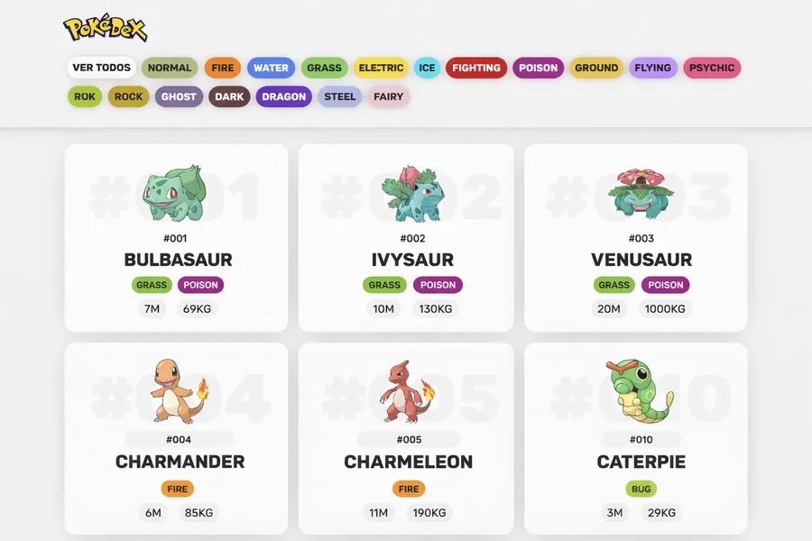
Aplicación web interactiva con consumo de API REST, búsqueda en tiempo real y diseño responsive.
Ver proyecto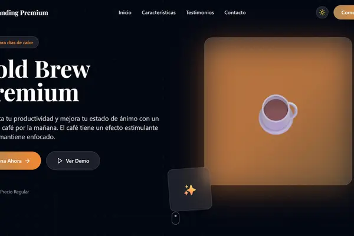
Sistema de landing page con 5 temas intercambiables para diferentes industrias.
Ver proyecto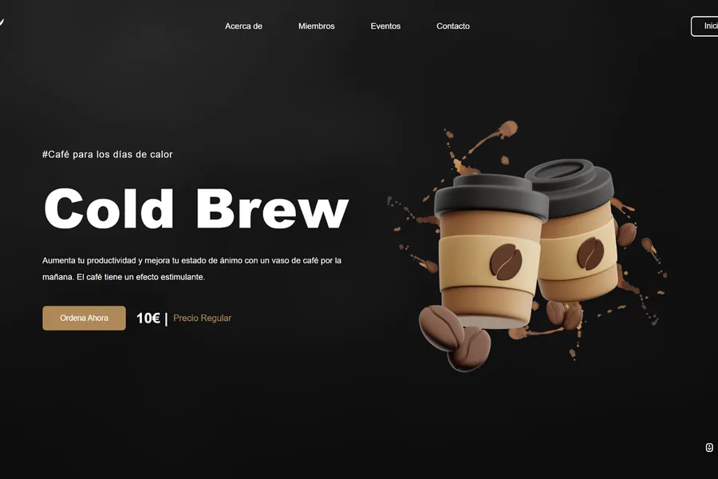
Landing page moderna con animaciones CSS, estructura de conversión y CTAs optimizados.
Ver proyecto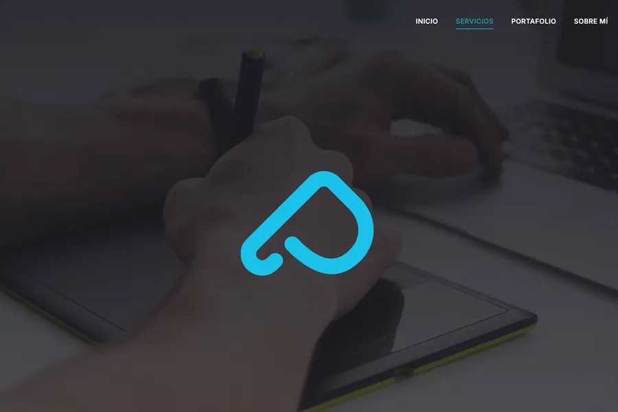
Sitio web para estudio creativo con presentación de servicios y galería de portafolio.
Ver proyecto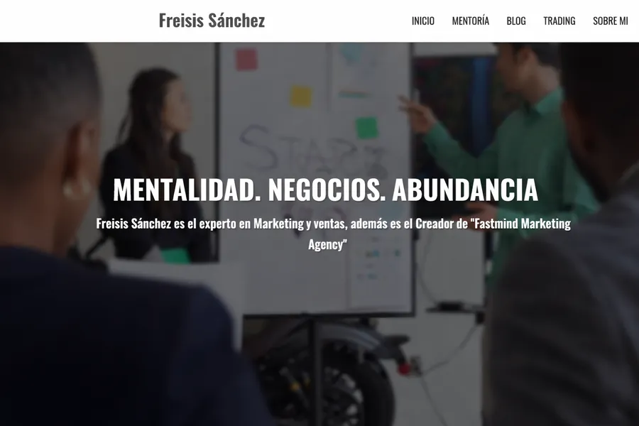
Sitio web profesional de trading y mentoría financiera con diseño premium y secciones de cursos.
Ver proyecto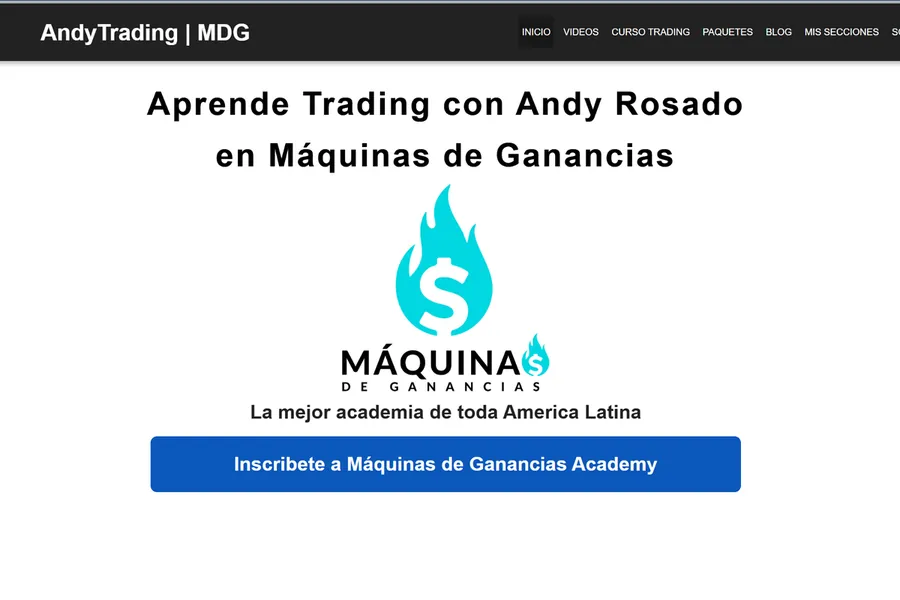
Landing page financiera con estructura visual clara y secciones de captación de leads.
Ver proyectoCatálogo digital con estructura e-commerce, navegación ágil y diseño orientado a conversión.
Ver proyecto